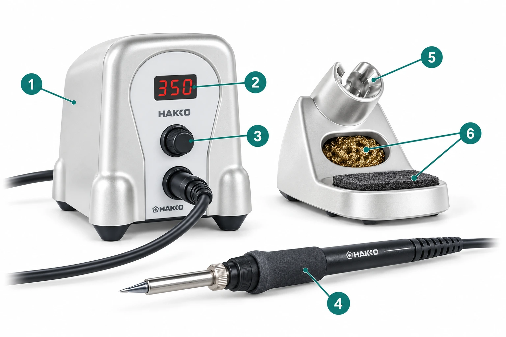

CENTRO EDUCATIVO SALESIANOS TALCATÉCNICO PROFESIONAL: 2 SUR 1147 – FONOS (71) 2615416 · 2615410BÁSICA y LICEO: 11 ORIENTE 1751 – FONOS (71) 2615454 · 2615457www.salesianostalca.cl – cest@salesianostalca.clTALCA - REGIÓN DEL MAULE - CHILEDepartamento de Lengua y Literatura · NM4 · 2026 · Docente: Francisco Núñez
El cautín y su estación
| Nombre y apellido | |
|---|---|
| Curso: 4°D | Fecha: |
Objetivo
Explicar con palabras claras para qué sirve cada parte del cautín y su estación.
Instrucciones
- Observen la imagen y los nombres de la tabla.
- Escriban para qué sirve cada parte, con palabras que cualquiera entienda.
No operen equipos.

| N.º | Parte | ¿Para qué sirve? |
|---|---|---|
| 1 | Estación Ejemplo | Sirve para controlar el calentamiento del cautín. |
| 2 | Pantalla | |
| 3 | Perilla | |
| 4 | Cautín | |
| 5 | Soporte | |
| 6 | Elementos de limpieza: esponja y lana metálica |
Referencia: HAKKO, FX-888DX, Manual de instrucciones en español (rev. 2024), secciones 1, 3 y 4.